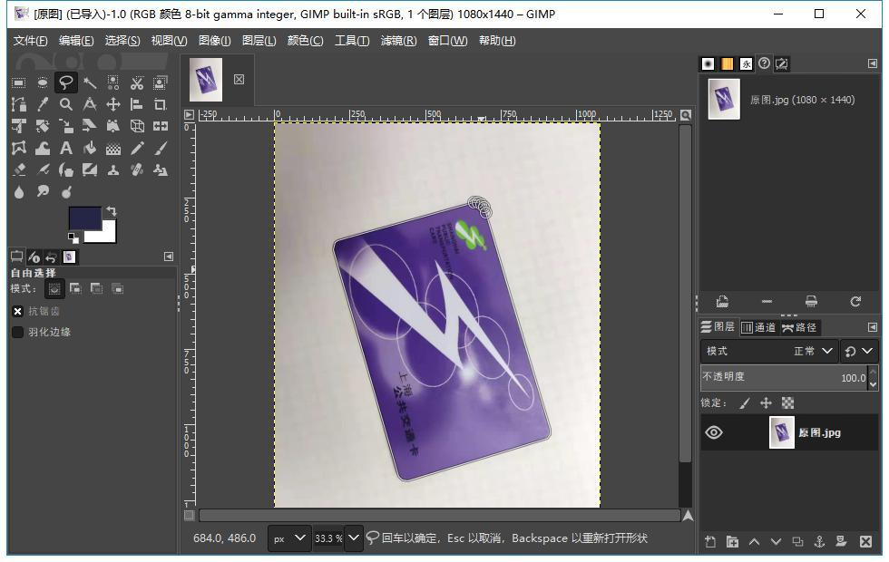
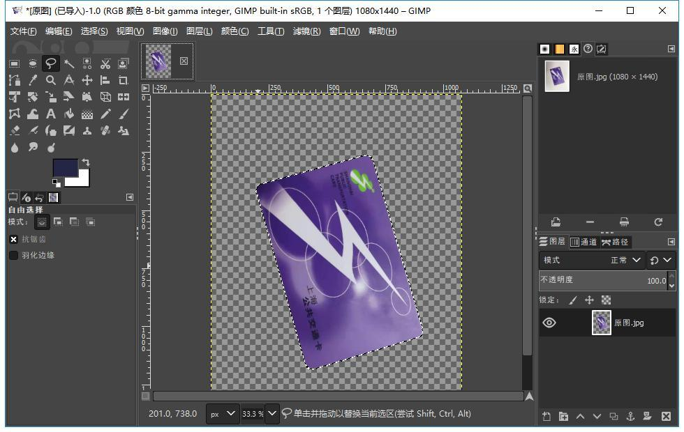
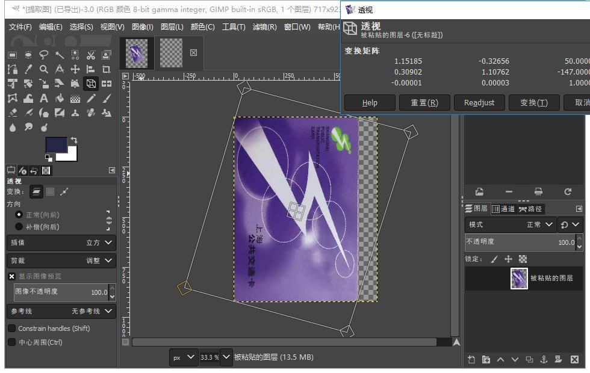
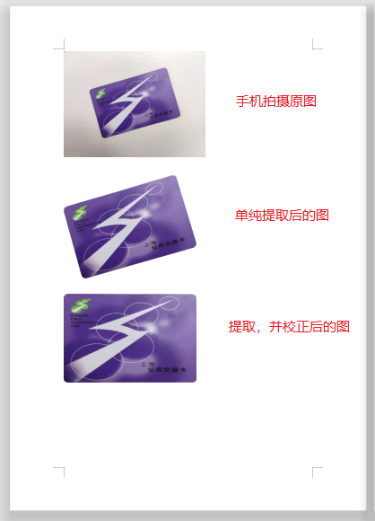
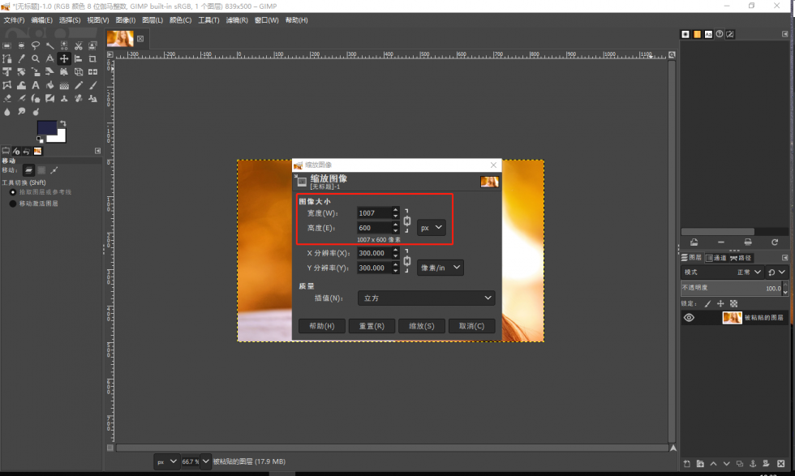
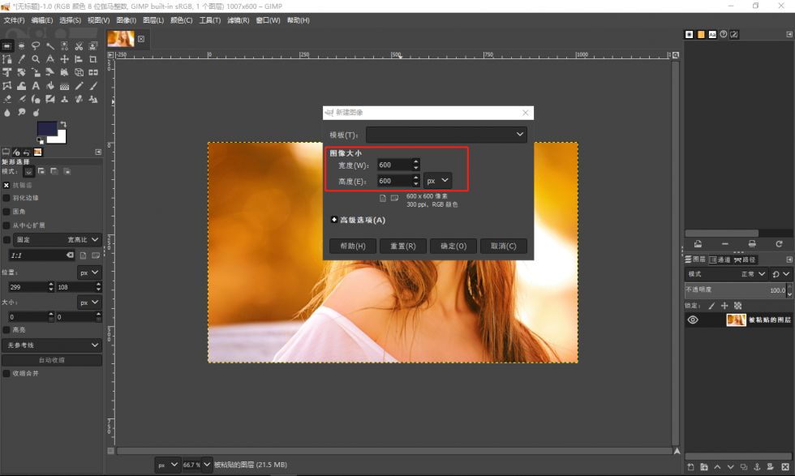
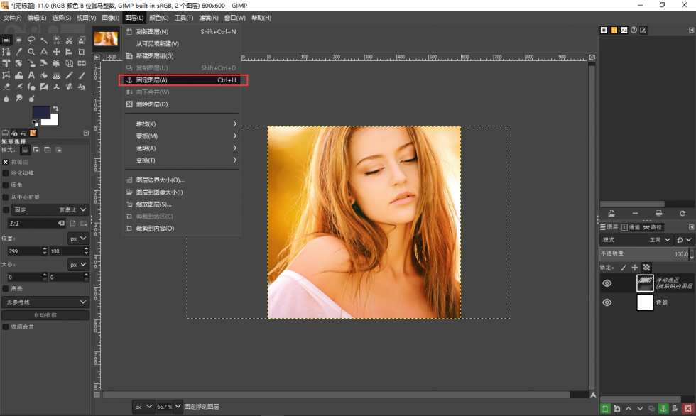
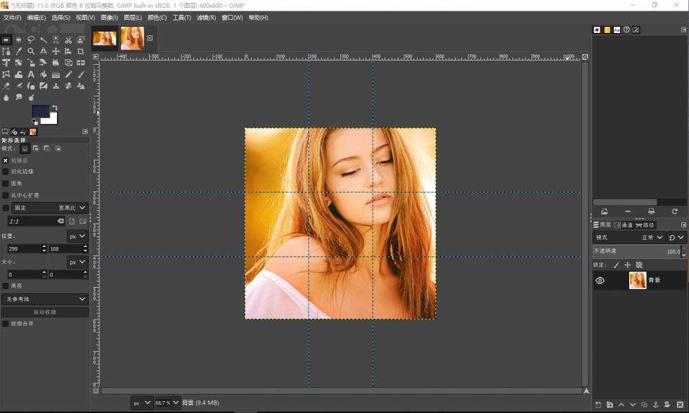
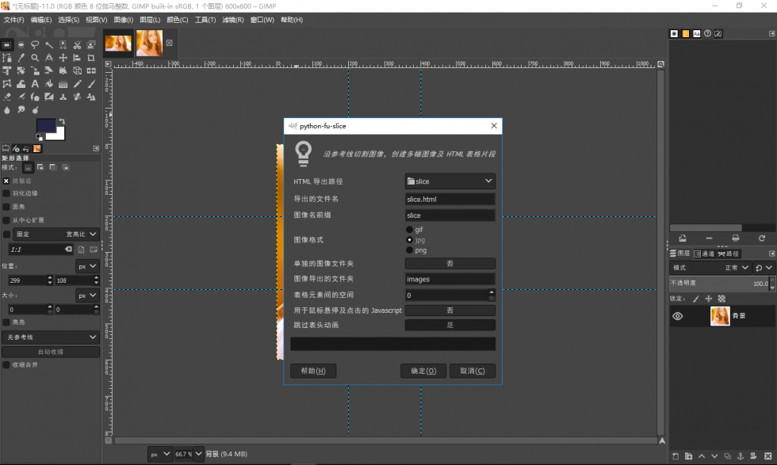

GIMP 日常应用
发布于 2019-11-15
GIMP means GNU Image Manipulation Program.
And also is The Free & Open Source Image Editor.
剪切并校正使用手机拍摄的证件照片
应用场景：
要复印身份证，可身边只有一台小型打印机，不支持复印。
于是就需要 从手机拍摄的照片中提取身份证 ，再进行简单的矫正后导出。
然后在 Word 中排版并打印。
处理效果：
下面依次为原图、单纯提取后的图、和提取并修正后的图（身份证由公交卡代替）:
操作步骤：
描点选中卡片整体轮廓
使用
自由选区(套索)工具, 沿着图中卡片边界描画出卡片的轮廓, 按Enter键确认选中; 增加透明图层
依次点击菜单栏
图层>透明>添加透明通道;删除卡片轮廓外的所有内容
选择>反选: 步骤1中已经选中了卡片区域, 通过反选来实现选中卡片以外的其他部分;编辑>清除: 删除卡片以外的所有部分, 步骤2中已经添加了透明图层, 所以删除后的区域全部变为透明部分; 再次反选选中卡片整体轮廓
选择>反选: 再次使用反选, 选中步骤1中选中的卡片区域;卡片校正
使用
透视工具, 按住其四个角进行拖动, 多次重复直到将卡片变换为卡片本身的方形, 按Enter键确认变换; 删除卡片区域以外多余的透明部分
方形校正完成后, 可能会存在多余的透明图层, 需要将其删除, 只保留卡片本身的部分;
编辑>复制: 因卡片区域一直在选中状态, 直接复制的就是调整后的卡片区域;文件>新建>从剪贴板: 此操作是新建一个Tab, 编辑剪贴板中复制的内容/区域, 而图层的大小和剪贴板复制区域的大小完全一致;导出或保存即可
文件>导出为> 选择你需要的格式正反面都处理后, 在
Word文档中排版后直接打印即可温馨提示: 二代身份证的尺寸约是 8.56cm x 5.40cm(长x宽)
最后再放上处理前后在
Word中的对比差异图:
制作九宫格大头贴
应用场景
经常看到朋友圈有人晒九宫格大头贴，虽然咱不晒，但保不齐哪天你有了女朋友呢？
处理效果

操作步骤
打开女朋友发你的照片，切出一个
正方形为什么要用方形的，因为朋友圈的图片是正方形的缩略图图像>缩放图像, 调整高宽中较小的那个，调整为一个易计算的整数, 比如本例中高度调整为的600px； 调整完成后，复制当前图像；
文件>新建, 创建一个新的图像编辑Tab, 高宽设置为600x600px； 粘贴复制的图片到新的图像编辑窗口，拖动图片到合适的位置；
图层>固定图层, 将图片固定到600x600px的图层上； 至此, 正方形图片剪切完成。 如果不怕手抖的话，也可以直接在原图上用
矩形选择工具圈出一个你想要的正方形； 然后复制选中内容，点击文件>新建>剪贴板，创建一个新的包含选中方形区域图片的编辑窗口。创建标记切割位置的
参考线图像>参考线>新建参考线, 需要创建4条，位置分别为水平200px,水平400px,垂直200px,垂直400px;当然也可以通过
新建参考线 (按百分比)的方式创建参考线, 位置分别为水平33.33%,水平66.66%,垂直33.33%,垂直66.66%;或者直接从主编辑区的上方和左方的标尺位置拖出这几条线;
 按照添加好的参考线切割并导出
滤镜>网络>切片, 选好导出目录确定即可;